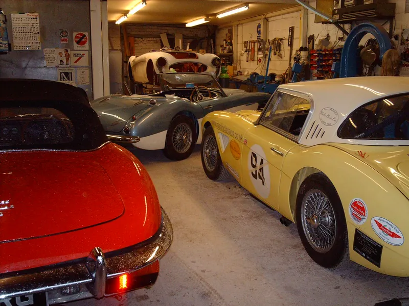
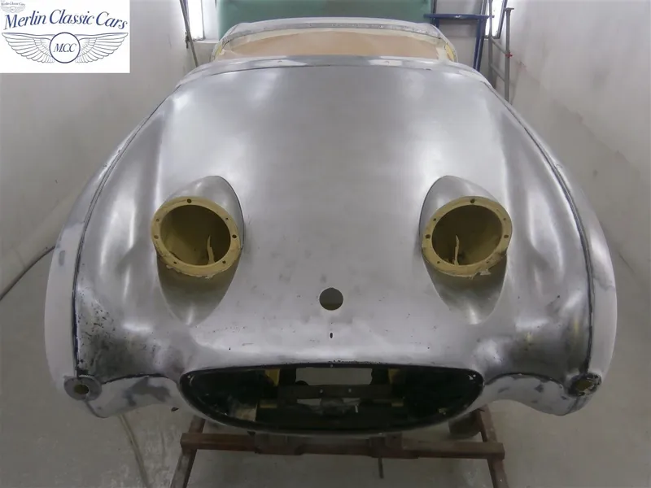
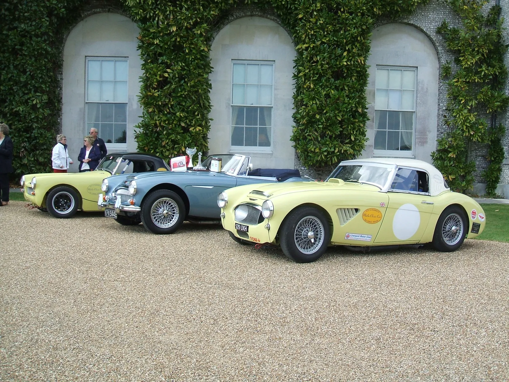
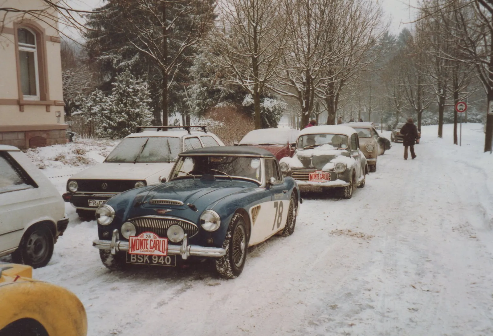
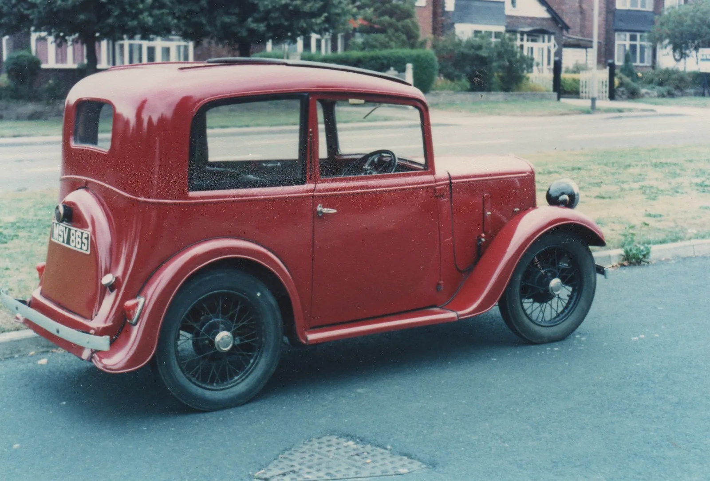
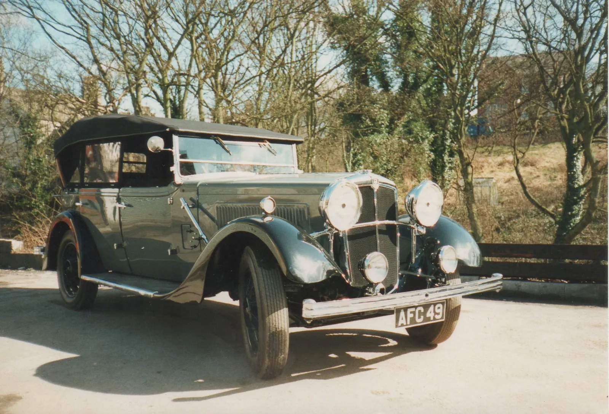

Servicing, MOT preparation, brakes, carburettors, electrics and bodywork for every marque, from a family workshop that has been restoring Austin-Healeys since 1977. Straight talk, written estimates, no surprises.
Book a service Get an estimate
Annual and interim services, pre-MOT checks, tuning, brakes and the jobs that stop small problems becoming big ones.
Bare-metal resprays, lead loading, rust repair and panel fabrication.
Rebuilds and repairs using the original tooling.
From part restorations to concours winners and competition cars.
Tell us the car and what it needs. We'll ask the right questions.
Clear scope and price before any work starts.
You see progress at every stage, the same photos that end up in our gallery.




